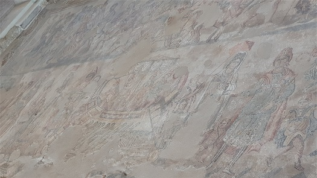

|
VILLA ROMANA DE NOHEDA
La villa romana de Noheda, se localiza en la pedanía de Noheda, en Villar de Domingo García (Cuenca). Su descubrimiento se produjo en 1984, de forma fortuita, durante unas labores de labranza. La cronología del yacimiento data del siglo I a.e.c. al siglo VI. La villa romana está construida a
su vez sobre otros asentamientos, en varios estratos de tiempo. Existe
un yacimiento ibérico original del siglo IV a.e.c. Luego se quedó
deshabitado, y entre siglo I a.e.c. y el II se construyó una villa
imperial. Típica villa vitrurbiana inserta en una finca de explotación agropecuaria (fundus). Se han documentado varias habitaciones. El complejo constructivo se articula en tres partes, la pars urbana reservada al dominus, la pars rustica destina a los trabajadores y la pars fructuaria reservada a los edificios necesarios para la elaboración y transformación de los productos obtenidos del fundus. Próximo a la villa se halla el complejo termal de unos 1.000.- m2. En julio de 2021, se le dota de 1 millón de euros para la restauración y cubrición del Balneum y hacerlo visitable.
Destaca su mosaico figurativo, en
la Sala Triabsiada. El más grande de España, con 231 m2. Su calidad
artística es muy buena.

En la villa han aparecido numerosos materiales arqueológicos: cerámicas, teselas de vidrio (algunas cubiertas con pan de oro), fragmentos de vidrio, piezas de mármol de distinta procedencia, tejas, ladrillos, cantos rodados y varios fragmentos de esculturas de mármol En octubre de 2018, se ha
descubierto el salón de recepción más grande del Imperio Romano. El
salón tiene una superficie aproximada de 750 metros cuadrados. También
se ha obtenido los primeros datos para conocer la reconstrucción y
evolución de la fauna y la dieta de los habitantes de la villa. La villa se asocia con la mansio romana de Urbiaca. La villa se cree que perteneció a un importante personaje o familiar del emperador Teodosio I. Sus restos no han sido reutilizados. En 2024 se ha realizado los
primeros estudios interpretativo con georradar. Con ellos han podido
profundizar más en cómo era la villa. Noheda tiene el conjunto
escultórico más grande de toda Hispania y la Galia. Han encontrado las
huellas y marcas de los canteros que están situados en uno radio de unos
50 kilómetros alrededor. En el siglo V, "los habitantes de la villa
cuando ya no estaba funcionando como villa monumental, lo vendieron para
subsistir". Se han documentado 29 tipos de mármoles que ornamentan el
frigidarium de Noheda procedentes de todo el Mediterráneo. También se ha
hallado una pequeña necrópolis con cuatro tumbas y nueve cuerpos y se
han descubierto seis estanques monumentales en la villa romana. |